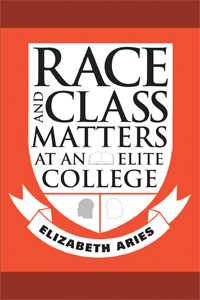

How race and class collide at a prestigious liberal arts college
How race and class collide at a prestigious liberal arts college


 How race and class collide at a prestigious liberal arts college
How race and class collide at a prestigious liberal arts college

|  |
Race and Class Matters at an Elite CollegeElizabeth Ariespaper EAN: 978-1-59213-726-8 (ISBN: 1-59213-726-1) |
"Finally, a case study that skillfully unpacks the problems of race and privilege, the less visible inheritance of social class, and the well-intentioned but unfinished campus efforts at environmental engineering. Elizabeth Aries’ insights and recommendations are as serious and relevant as the vexing challenges our colleges face."
—Eugene M. Tobin, Program Officer for the Liberal Arts Colleges Program at The Andrew W. Mellon Foundation, former President of Hamilton College, and co-author of Equity and Excellence in American Higher Education
In Race and Class Matters at an Elite College, Elizabeth Aries provides a rare glimpse into the challenges faced by black and white college students from widely different class backgrounds as they come to live together as freshmen. Based on an intensive study Aries conducted with 58 students at Amherst College during the 2005-2006 academic year, this book offers a uniquely personal look at the day-to-day thoughts and feelings of students as they experience racial and economic diversity firsthand, some for the first time.
Through online questionnaires and face-to-face interviews, Aries followed four groups of students throughout their first year of college: affluent whites, affluent blacks, less financially advantaged whites from families with more limited education, and less financially advantaged blacks from the same background. Drawing heavily on the voices of these freshmen, Aries chronicles what they learned from racial and class diversity—and what colleges might do to help their students learn more.
Excerpt available at www.temple.edu/tempress
"Aries is, I think, quite right in pushing the trend toward diversifying the academy toward its ultimately most important purpose: changing minds, attitudes, and behaviors. Aries asks if colleges must make adjustments to incorporate a more diverse student body, rather than require students to assimilate into an elite environment. If this question and its implications are taken seriously, this book could have a considerable impact."
—
Joan Ostrove, Macalester College
"Aries breaks new ground with this study… present[ing] the issues students face when coping with class and race differences… The author’s keen sense that these major themes are revealed in students’ specific experiences enlivens and informs."
—Publishers Weekly
"[A] refreshingly in-depth and pragmatic addition to the literature on diversity in higher education."
—Teachers College Record
Acknowledgements
1. Becoming a More Diverse College: Challenges and Benefits
2. Investigating Race and Class Matters on Campus
3. First Encounters with Race and Class
4. Negotiating Class Differences
5. Relationships across Race and Class
6. Learning from Racial Diversity
7. Learning from Class-Based Diversity
8. Negotiating Racial Issues
9. As the Year Ended
10. Meeting the Challenges of Diversity
Appendix A: On-Line Survey Measures
Appendix B: Interview Questions
Notes
Reference
Index
 | Elizabeth Aries is Professor of Psychology at Amherst College. She is the author of Men and Women in Interaction: Reconsidering the Differences and Adolescent Behavior: Readings and Interpretations. |
Education
Race and Ethnicity
Sociology
© 2015 Temple University. All Rights Reserved. This page: http://www.temple.edu/tempress/titles/1941_reg.html.